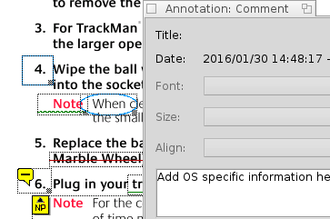

Creating and Editing Annotations
Creating and Editing Annotations
BePDF allows the creation and editing of PDF file annotations.
The show Annotation toolbar icon can be used to show and hide the annotation toolbar. When the icon is pressed the annotation toolbar is displayed in the left pane. This feature allows for the addition of text, comments and creation of marks within PDF documents. The annotations can be saved to the PDF file. |
Creating Annotations
To create an annotation, select the type of annotation from the annotation toolbar; BePDF changes into the annotation editing mode. All annotation on the current page will be surrounded by a doted rectangle. To create the annotation, click and drag over the section of the document to which the annotation should apply. The selection box area created for the annotation will serve as the clickable area to which the annotation applies. For example, dragging the annotation box over a figure in the document will show annotated text when any part of the figure is clicked. Once the annotation box is created, and the Edit Annotation utility is still active, the annotation area can be resized by clicking the handle in the lower right hand corner of the annotation, and moved by clicking and dragging within the field of the annotation. |  | ||
To add text to the annotation, right click the annotation and select Properties. A text box will appear that will allow the addition of text to the annotation. Add text, and close the Annotation text box. Annotations can be made to the entire document and on various pages without exiting the Edit Annotation utility. Also, graphics annotations allow for the addition of annotated text, as well. When done editing or creating the annotations, click on the hand icon in the annotation toolbar. The annotation handles will disappear. Clicking on the field of the annotations will display the previously entered Annotation text in a pop-up text box. Before exiting the PDF document, the file must be saved using File Save As to retain the annotations. |
Notes on Annotations
For annotations to be added to a PDF document, the file must not be encrypted
Creating annotations while the PDF document is rotated is not supported
Annotations are not supported when using the GhostScript rendering engine in BePDF
Saved annotations are viewable on any operating system which has a PDF viewer that supports annotations
Unsupported annotation types include: Links, Lines, Stamps, Inks, FileAttachments, Sounds, Movies, Widgets, PrinterMarks, and TrapNets